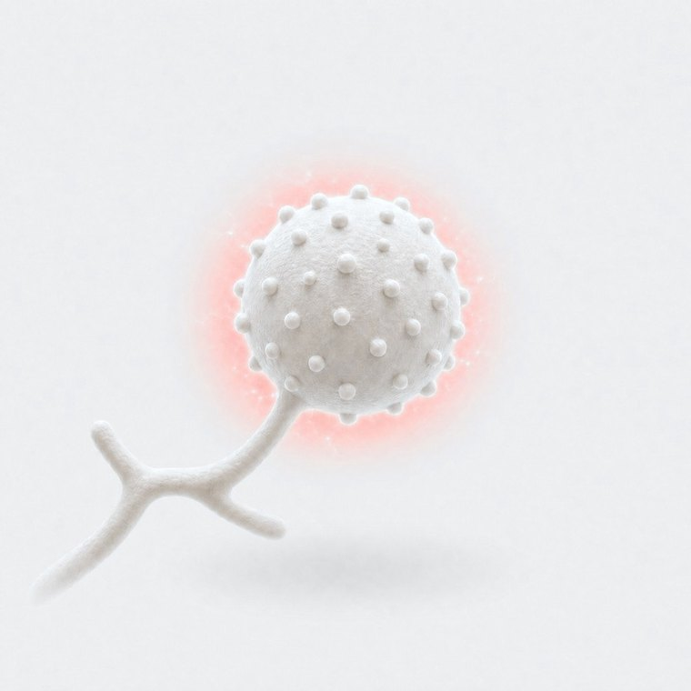

![C-POLAR]()
C-POLAR Technologies, Inc. is a Health Science Platform Company built around its patented NanoFlashing™ technology.
The platform has five primary application verticals:
What they carry, we capture.
Positive polarity captures particles, destroys up to 99% of pathogens through a physical mechanism.
